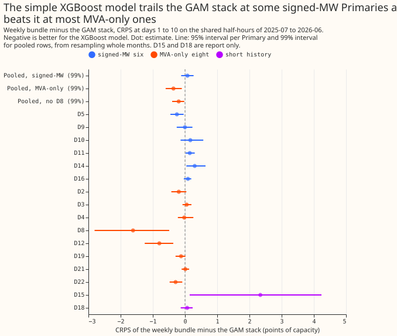
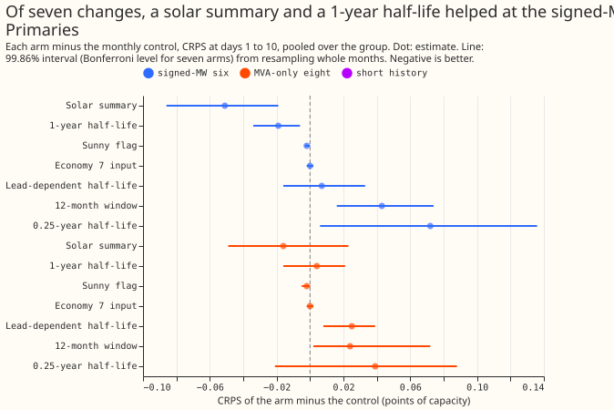

A single weekly XGBoost model for Primary demand against the GAM stack
A single XGBoost model per Primary, refitted weekly, is as good as the GAM stack at 9 of 14
Primaries
and better on average at the eight whose meters hide reverse flow. At the six Primaries with signed
readings it is level on average but worse at D11 and D14, and its upper tail is narrower. A
Primary is a 33 kV to 11 kV substation, labelled D2 to D22. The XGBoost model is the weekly member
of BG2 (experiment 87), which uses the weather forecast of the 51-member ECMWF ensemble, the
local hour and day of week, bank-holiday distances, and the three most recent power readings. We
tested seven small changes to it, one at a time, on monthly refits. We then refitted the three
changes that helped, together, every week. The GAM stack is "Primary demand research default 1,
extended to 336 hours" from experiment 377,
without the solar summary below 168 hours. All scores are CRPS (the quantile score over 11 levels)
in points of effective capacity at days 1 to 10 on fold_a_daily_gap_v1, under demand-v1. A
negative difference means the XGBoost model is better. Every MVA-only number assumes reactive power
is zero. The XGBoost model is refitted weekly and the stack monthly, so the contrast mixes the
model family with the refit schedule.


Results
- Hypothesis. Not supported as stated: the XGBoost model is not within +0.05 points of the stack at all 14 countable Primaries. Verdict "partly supported" because it is at 9 of 14.
- Matches the stack (point estimate within +0.05). D8, D12, D22, D5, D2, D19, D4, D9, D21. The 95% interval lies wholly below zero at D8 (-1.62), D12 (-0.80), D22 (-0.29), and D5 (-0.25), although the audit's alternative bootstrap puts D5 at -0.62 to +0.11. Worse than the stack with an interval above zero: D14 (+0.30; +0.04 to +0.63) and D11 (+0.15; +0.02 to +0.30). Inconclusive: D10 (+0.16), D16 (+0.09), D3 (+0.050, which misses the tolerance by 0.0002). The worst Primary is D14. D15 and D18 are report only: +2.34 (0.14 to 4.24) over 4 months and +0.07 over 6 months.
- Pooled, 99% interval. Signed-MW six +0.075 (-0.120 to +0.266). MVA-only eight with D8 -0.361 (-0.602 to -0.101), without D8 -0.197 (-0.399 to -0.025). Leaving one Primary out never changes the sign (signed-MW +0.03 to +0.14; MVA-only -0.20 to -0.42).
- Against the other references. Minus BG2: +0.007 (-0.048 to +0.062) signed-MW, -0.016
(-0.069 to +0.042) MVA-only. Minus the stored weekly baseline: -0.038 (-0.092 to +0.008) signed-
MW,
-0.034 (-0.063 to -0.004) MVA-only. Minus
manual_heuristic: -0.58 and -0.65. Minusclimatology: -0.81 and -1.09 (all 99%). - Absolute scores, days 1 to 10 (bundle, stack, BG2, manual heuristic, climatology). Signed-MW: D5 3.83, 4.08, 3.94, 4.35, 4.48; D9 2.51, 2.51, 2.51, 2.92, 2.99; D10 3.43, 3.27, 3.45, 4.16, 4.31; D11 2.58, 2.43, 2.57, 3.41, 3.55; D14 2.51, 2.21, 2.39, 3.01, 3.47; D16 3.29, 3.20, 3.24, 3.80, 4.20. MVA-only: D2 2.28, 2.47, 2.30, 2.86, 2.93; D3 1.72, 1.67, 1.75, 2.11, 2.33; D4 2.42, 2.45, 2.51, 2.80, 2.83; D8 7.61, 9.23, 7.61, 8.31, 9.64; D12 6.72, 7.52, 6.75, 7.92, 8.83; D19 3.17, 3.29, 3.18, 3.79, 3.93; D21 2.36, 2.35, 2.38, 2.77, 2.91; D22 3.81, 4.10, 3.75, 4.71, 5.47.
- Screening, each change minus the monthly control (99.86% interval, Bonferroni for seven arms). Daily mean shortwave (A2): -0.051 (-0.086 to -0.019) signed-MW, -0.016 (-0.049 to +0.023) MVA- only. 1-year half-life (A5): -0.019 (-0.034 to -0.006) and +0.004. Sunny flag: -0.002 at both groups. Economy 7 input (A1): 0.000 (-0.002 to +0.002). Lead-dependent half-life (A3): +0.007 and +0.025 (worse at MVA-only). 12-month window: +0.043 and +0.024. 0.25-year half-life: +0.072 and +0.039. The refitted control matches the stored monthly member in the median (mean gap 0.02 MW) but not fully in CRPS (up to 0.066 points at D16; see "Audit"). The screening used all 365 daily runs.
- Predictions. P1 holds (9 of 14 against 9 to 11 predicted). P2 fails: the Economy 7 input moved the Economy 7 step hours by -0.002 (signed-MW) against a predicted -0.03 to -0.10. The local hour is already an input, so a tree can split on the step. P3 partly holds: the solar summary lowers the score on sunny April-to-June half-hours by 0.074 at the signed-MW six and 0.056 at the MVA-only eight. P4 holds (lead-dependent half-life +0.007 and +0.025, both under 0.03). P5 fails: the sunny flag removes about 0.15% of the D12 bias (4.92 to 4.91 points).
- MVA-only handling. The control under-forecasts demand on sunny half-hours at D12 by 4.92 points of capacity (median minus actual) and over-forecasts it by 6.19 points at D19, 4.75 at D21, and 9.88 at D8. The sunny flag leaves each bias unchanged to within 0.05 points at the 14 countable Primaries. The rule-chosen reverse-flow column of experiments 366 and 374 is off at D12, D2, and D8 (the three checked) when computed from forecast shortwave (correlation +0.21 to +0.28 at D12 against a threshold of 0.3), so that arm equals the control by construction and was not fitted. The signed-MW six serve as controls: the sunny flag moves their bias by under 0.05 points.
Tails and curtailment
| Measure, days 1 to 10 | Signed-MW bundle | Signed-MW stack | MVA-only bundle | MVA-only stack |
|---|---|---|---|---|
| Pinball loss q05 / q95 | 0.68 / 0.89 | 0.77 / 0.81 | 0.86 / 0.95 | 1.00 / 1.12 |
| Pinball loss q01 / q99 | 0.25 / 0.36 | 0.26 / 0.27 | 0.25 / 0.33 | 0.28 / 0.33 |
| Coverage q05 / q95 (ideal 0.05 / 0.95) | 0.053 / 0.916 | 0.067 / 0.946 | 0.068 / 0.938 | 0.070 / 0.944 |
| Coverage q01 / q99 (ideal 0.01 / 0.99) | 0.007 / 0.984 | 0.022 / 0.982 | 0.013 / 0.992 | 0.021 / 0.982 |
| twCRPS | 0.372 | 0.327 | 0.197 | 0.226 |
- The upper tail is the XGBoost model's weakness at the signed-MW six. Its q95 coverage is 0.916 and its q99 pinball loss is 0.36 against 0.27 for the stack. At the MVA-only eight the XGBoost model has the lower pinball loss at q05, q95, and q01, and the lower twCRPS.
- Avoidable curtailment cost, signed-MW six, scored year. At a limit of 0.9 times the maximum observed export, the stack costs less at 4 of 6 (D16 £2.95 million against £6.64 million; D14 £0.54 million against £1.69 million). At a limit of 0.5 the stack costs less at all six. The cost is not defined at the MVA-only eight (reactive power assumed zero).
- Load-shift events (hand-labelled). Event rows: signed-MW bundle 8.23 against stack 7.35 and BG2 7.96; MVA-only 5.18 against 5.46 and 5.15. The 7 days after: signed-MW 4.55 against 5.11 and 5.07; MVA-only 2.90 against 2.98 and 2.88. No pass or fail is drawn.
- Lag-missing rows. Only 0.2% of scored half-hours have a missing power lag (3,630 at the signed-MW six, 3,226 of them at D5; 2,238 at the MVA-only eight). Their 5%-to-95% interval is 23.6 points wide at the signed-MW six against 20.1 on rows with lags, and 23.3 against 26.0 at the MVA-only eight. Coverage of that interval is 0.826 and 0.842 on missing rows, against 0.863 and 0.870 on present rows (nominal 0.90). No widening rule was fitted: 3,630 rows, concentrated in one Primary, are too few to fit a factor.
Checks
- Median minus mean. Not computed: the stored frames hold quantiles only and no mean. The mean absolute error of the median points the same way as CRPS at the contrasts that matter: D14 4.34 against 3.90 for the stack, D11 4.61 against 4.34, D8 14.06 against 15.94, D12 12.08 against 13.20.
- Triggers. Trigger 2 fires: the Economy 7 prediction (P2) was contradicted, and the explanation (the local hour is an input) is structural and was not tested by a removal arm. Triggers 1, 3 to 6 do not fire. The leave-one-out contrasts keep their sign. Trigger 7 does not fire. The Sonnet audit and its triage are listed under "Audit" below.
Caveats and what to try next
- Lead range. The headline is days 1 to 10. Days 11 to 14 are not read here.
- Schedule confound. The XGBoost model is refitted weekly and the stack monthly. The stack has no solar summary below 168 hours, so it is not the protocol's current research default.
- Selection. The three changes were chosen on the scored year. The weekly bundle's gain over the stored weekly baseline (-0.04 signed-MW, -0.03 MVA-only) is an upper bound.
- Next. Give the signed-MW six a better upper tail (a calibration step on the XGBoost quantiles). Try a custom folded-latent loss for the MVA-only reverse-flow bias. GAM partial effects as XGBoost inputs (out-of-fold values per refit) need a separate experiment.
Audit
A fresh Sonnet agent re-derived the headline contrasts from the stored predictions with its own
join and pinball code (report: briefs/e381_audit_report.md in the private data folder). Triage:
- Headline numbers reproduce. Bundle at D5, D12, and D8 is 3.827, 6.716, and 7.615 (log: 3.829, 6.716, 7.612), and bundle minus stack is -0.253, -0.800, and -1.618 (log: -0.253, -0.799, -1.615). Accepted: nothing changes.
- The reference gate is only partly met. The refitted monthly control differs from the stored monthly member by up to 0.066 points of CRPS per Primary (D16 breaks the plan's 0.05 gate) and by +0.031 on average at the signed-MW six. The printed gate was a median gap (mean 0.02 MW), not a CRPS gate. A cause such as GPU non-determinism is likely and untested. Accepted: the screening contrasts compare two refits made the same way, so they are unaffected, but the bundle's gain over the stored weekly baseline (-0.04 signed-MW, -0.03 MVA-only) is the same size as this reproducibility gap and is not read as a gain.
- D5 is borderline. The agent's row-weighted month bootstrap gives -0.62 to +0.11 for D5 against the stack. Accepted: the headline names three Primaries (D8, D12, D22) with clear gains and D5 as borderline.
- Screening rows. The screening used all 365 daily runs (4,012,330 half-hours), not the
registered 292
fold_a_daily_gap_v1runs. Accepted as a caveat: the final comparison uses the shared rows (2,824,844 half-hours, which BG2,manual_heuristic, andclimatologylimit to the 292 runs, and the stack limits further at D8, D15, and D18). - Selection. Almost all of the bundle's gain over the control comes from the solar summary, and the sunny flag is kept on a 0.002-point effect, both chosen on the scored year. Accepted: stated in the caveats.
- No leakage found. The previous-day shortwave mean is missing on the first day of every run, and every scored run is served by the latest refit at or before its origin. The daily shortwave mean has a negligible train-and-serve difference (half-hours with missing power are dropped from training).
- Triggers. Trigger 2 fires and its explanation holds: the control already has
hour_local. Triggers 3 and 4 do not fire. The audit did not compute trigger 6, and did not rerun the tail, curtailment, or load-shift sections.
Arms (pre-registered in the plan above)
A1 Economy 7 input, A2 daily mean shortwave, A3 lead-dependent half-life, A4 sunny flag (the MVA remedy), A5 recency (0.25-year and 1-year half-lives, 12-month window), A7 rule-chosen reverse-flow column (not fitted, see above), and the bundle of A2, A4, and the 1-year half-life. A6 (GAM shapes as inputs) was not run.
Plan as registered
Plan (written before any score was read). The question is whether a plain XGBoost model,
retrained every week and
with no stacked parts, can match the GAM stack at each of the 16 Primaries. The baseline is the
weekly member of BG2 (experiment 87), scored under the demand-v1 protocol by experiment 379. The
baseline already holds the three recent-power lags (experiment 371 found these carry the gap at D8),
the local hour and day of week, the distance to the nearest bank holiday and to Christmas, and
lead_hours, so those candidates are in the control and are not tested again.
Plan: pre-registered arms
- Control. Experiment 87's
n1hrecipe, refitted monthly for screening (the storedonly_Marm of experiment 379 is the reference; the refit must reproduce it within 0.05 points before any other arm is read) and weekly for the final comparison (the storedonly_Warm).colsample_bytreeandcolsample_bynodestay at 1.0 in every arm, so no arm gains from column subsampling. - A1, Economy 7. Adds two inputs: a 0/1 flag for the local half-hours 1 to 6 (the protocol's Economy 7 step hours) and the number of half-hours since local 00:30, clipped to 0 to 12.
- A2, solar summary stand-in. Adds the mean forecast shortwave over the local day of the valid time (the same ensemble member, the same run) and the mean over the previous local day. It is a cheap stand-in for the GAM's two-number solar summary S.
- A3, lead-dependent recency. Row weights use a half-life of 0.25 years for rows at leads under 48 hours and 1 year for rows at longer leads, in place of the single 0.5-year half-life.
- A4, MVA remedy (eight MVA-only Primaries only; the signed-MW six are controls). Adds a sunny flag (forecast shortwave over the Haurwitz clear-sky irradiance above 0.6) and its product with shortwave. A second variant reads the rule-chosen fit of experiments 366 and 374 as an input column if the stored fit exists for the run origins and uses data from before each origin only; the plan records at the start of the work whether it does, and drops the variant otherwise.
- A5, recency (maintainer, 2026-10-28). Experiments 17 and 34 found that a half-life of 0.5
years
beats 2 years by 0.03 to 0.15 points (experiment 34) and that a 12-month sliding window is about
as
good (experiment 17: -0.92 for the half-life, -0.84 for the window, against an expanding window),
while a
6-month window is worse. The control already uses 0.5 years, so the arms test the neighbours:
hl025(0.25 years),hl1(1 year), andwin12(a 365-day window with the 0.5-year half-life). The half-lives are fixed here and not chosen on tuning months, which lie before the scored year. - A6, GAM shapes as XGBoost inputs (optional, only if time allows). Not run in this experiment. It would fit the GAM per fold on that fold's training window only, take its fitted partial effects for time of day, day of week, and temperature and its stage-1 fitted value, and give the training rows out-of-fold values (the GAM refitted with each training month held out in turn) so that no row sees an in-sample fit; the scored rows use the fold's full-window fit. This needs the GAM stack fitted on 12 held-out-month folds per refit, so it is a separate experiment.
- A7, rule-chosen reverse-flow column (MVA-only eight; added 2026-10-29 at the manager's request, after the A1 to A5 screening). One extra column, no second model: experiment 366's rule recomputed at each monthly refit from that refit's training rows only (sunny midday readings: the Pearson correlation with shortwave above 0.3, or a 1st percentile below 1.0 point of capacity, switches the column on), times the fitted slope of those readings on shortwave, times the forecast shortwave. Prediction: the rule switches the column on at D12 only; the column is a monotone function of shortwave at D12, which a tree can already split on, so the arm moves the D12 score by under 0.02 points and leaves the sunny-half-hour bias at about -4.9 points. A bigger change would mean the shortwave inputs interact badly with the folded meter. Tested monthly at the eight MVA-only Primaries with the signed-MW six as unchanged controls (the rule is off there). A signed-capacity-times-irradiance column from the same fit is the same function again, so it is not run separately.
- Bundle. The arms kept by the decision rule, fitted weekly.
Diagnostics before the arms
- MVA handling. Residuals of the control (median minus actual) on sunny half-hours at D12 (known reverse flow), at the other seven MVA-only Primaries, and at the signed-MW six, by group and lead band, before and after A4.
- Reference rows. The stack from experiment 377, BG2,
manual_heuristic,climatology, and the stored weekly baseline, each reported with its absolute score.
Tails and nulled inputs (maintainer, 2026-10-28)
Tail pinball loss and coverage at the 0.01, 0.05, 0.95, and 0.99 quantiles are reported per group and per Primary beside CRPS and twCRPS, and the take-home names the tail result. The control and every arm already carry the three recent-power lags, which are missing (NaN) when the telemetry has a gap near the origin. The write-up reports mean 5%-to-95% interval width and coverage on half-hours whose lags are missing against half-hours whose lags are present, and tries one simple widening rule (scaling the quantile distances from the median by a factor fitted on the earlier months of the same fold) if coverage on the missing rows falls short.
Avoidable-curtailment cost (maintainer, 2026-10-28)
Because the arms feed missing lags on event rows, the write-up reports the protocol's avoidable
curtailment cost (studies.eval_protocol) during each hand-labelled load-shift event, in the 7 days
after it ends, and across all rows, per group and per Primary, beside CRPS and the tail measures.
The
cost is defined only for the signed-MW six, so the MVA-only eight carry the label "not defined".
The take-home names it.
Constraints
Sonnet only. At most 3 threads and MemoryMax=16G per job. The GPU is shared. Tail calibration,
slices, load-shift rows, per-Primary table, leave-one-out, and the D8 own-residual and donor-spread
arms follow the protocol page. Reactive power is assumed zero at the MVA-only Primaries.